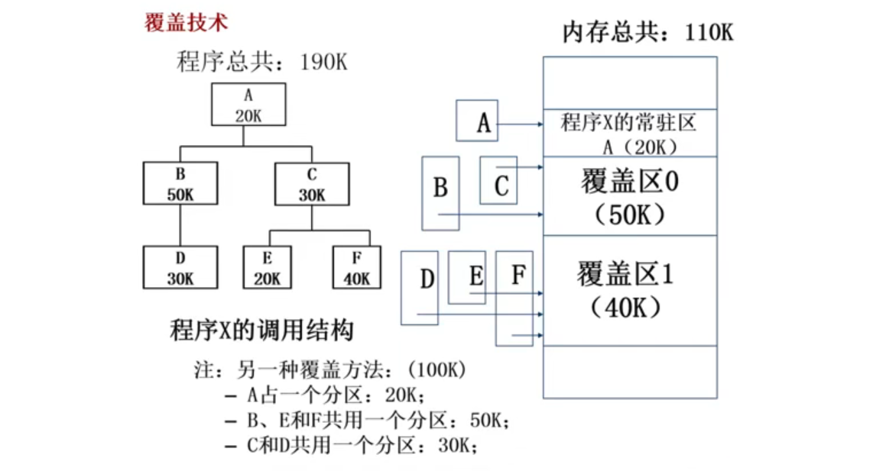
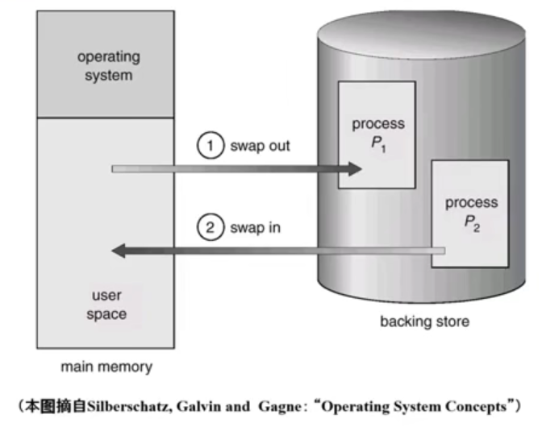

操作系统之 chapter5.1 内存管理之覆盖技术与交换技术
这篇文章主要介绍操作系统的虚拟内存的起因，并对上世纪 80 年代流行的内存覆盖技术和内存交换技术进行回顾。同时，我们将在下一小节中给出虚拟内存管理技术——虚存技术。
虚拟内存的起因
理想中存储器：更大、更快、更便宜的非易失性存储器。
实际中，操作系统中存储器的层次结构：
| 存储器层次结构 | 典型访问时间 | 典型容量 |
|---|---|---|
| 寄存器（Register） | 1 nsec | 数 KB |
| 高速缓存（Cache） | 2 nsec | 数 MB |
| 主存储器（Main Memory） | 10 nsec | 数 GB |
| 硬盘、磁盘 | 10 msec | 数 TB |
| 磁带 | 100 sec | 数 TB |
使用硬盘 / 磁盘，使更多的程序可以在有限的内存中运行。
解决内存不足的方法
在计算机系统中，尤其是在多道程序运行的环境下，可能会出现内存不够用的情况，怎么办？
如果是 程序太大 ，超过了内存的容量，可以采用 手动的覆盖（overlay）技术，只把需要的指令和数据保存在内存当中；
如果是 程序太多 ，超过了内存的容量，可以采用 自动的交换（swapping）技术，把暂时不能执行的程序送到外存中；
如果想要在有限容量的内存中，以更小的页粒度为单位装入更多、更大的程序，可以采用 自动的虚拟存储技术。
覆盖技术
目标
是在较小的可用内存中运行较大的程序。常用于多道程序系统，与分区存储管理配合使用。
原理
把程序按照其自身逻辑结构，划分为若干个功能上相互独立的程序模块，那些 不会同时执行的模块共享同一块内存区域，按时间先后来加载、运行。
必要部分（常用功能）的代码和数据，放在内存的常驻区；
可选部分（不常用功能）在其他程序模块中实现，平时存放在外存中，在需要用到时才装入内存；
不存在调用关系的模块不必同时装入到内存，从而可以相互覆盖，即这些模块共用一个分区。
覆盖技术示例：

示例中，程序大小为 190K，而整个内存的大小才 110K，内存放不下这个程序。采用覆盖技术，将不会同时执行的模块放在同一个覆盖区（谁执行将谁放在覆盖区中，不执行的先暂存在外存中）。
因此不需要将整个程序 190k 的数据全部放入内存中，而是划分为：常驻区（20k） 覆盖区 0（50k） 覆盖区 1（40k） 压缩至了 110k 的内存空间使用。
另一种覆盖方式：A 在常驻区，B、E 和 F 在覆盖区 0，C 和 D 在覆盖区 1，这样可以压缩至 20 + 50 + 30 = 100K 的内存空间使用。
程序串行执行，每次只会用到某个分区中的一个模块，不同的模块占用区域的时间不一样，所以可以往同一个分区存放。
缺点
- 需要由程序员来把一个大的程序划分为若干个小的功能模块，并确定各个模块之间的覆盖关系，费时费力，增加了编程的复杂度；
- 覆盖模块从外存装入内存，实际上是以时间延长来换取空间节省。
交换技术
目的
多道程序在内存时，让正在运行的程序或需要运行的程序获得更多的内存资源。
原理
- 可将暂时不能运行的程序送到外存，从而获得空闲内存空间。
- 操作系统把一个进程的整个地址空间的内容保存到外存中（换出，swap out），而将外存中的某个进程的地址空间读入到内存中（换入，swap in）。
- 换入换出内容的大小为整个程序的地址空间。
换入换出是通过操作系统的内存管理机制来完成的。操作系统会维护一个页表（page table），记录每个进程的虚拟内存和物理内存之间的映射关系。当一个进程被换出时，操作系统会将该进程的所有页面（包括代码、数据和堆栈）从内存复制到外存中的一个交换文件中。而当一个进程需要被换入时，操作系统会将该进程的所有页面从交换文件中复制回内存，并更新页面表中的映射关系。这样就可以实现进程的换入换出。
交换技术示例：

缺点
交换技术实现中的几个问题：
交换时机的确定（何时需要发生交换）：只当内存空间不够或有不够的危险时，才进行换出操作；
交换区的大小：外存的交换区必须足够大，以存放所有用户进程的所有内存映像的拷贝，必须能够对这些内存映像进行直接存取；
程序换入时的重定位：换出后再换入的内存位置一定要在原来的位置上吗？不一定。最好采用动态地址映射的方法，否则寻址可能出现问题。
- 动态地址映射：程序的虚拟地址一样，物理地址换入后不一样了，这没关系，靠页表映射解决就可以啦。
交换技术是可以由操作系统帮助完成的，对于程序员来说是透明的，减轻了程序员的负担，但是系统的开销变大了。
覆盖技术与交换技术对比
| 特点 | 覆盖技术 | 交换技术 |
|---|---|---|
| 适用范围 | 仅适用于没有调用关系的程序模块之间 | 适用于任意进程之间 |
| 逻辑覆盖结构 | 需要程序员给出各个模块之间的逻辑覆盖结构 | 不需要程序员给出各个模块之间的逻辑覆盖结构 |
| 发生位置 | 程序的内部 | 内存中程序与管理程序 / 操作系统之间 |
| 程序员负担 | 增加程序员负担 | - |
| 处理器开销 | - | 增加处理器开销 |
| 交换最小单位 | 模块为单位 | 进程为单位 |
参考资料：
1：https://github.com/OXygenMoon/OperatingSystemInDepth
2：https://blog.csdn.net/weixin_53407527/article/details/124983180